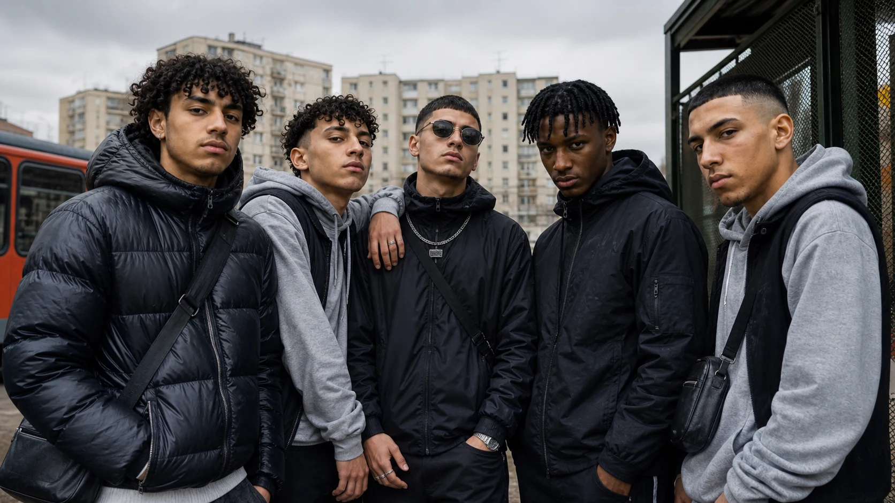

Milano, primi anni Ottanta. Bastano pochi chilometri per cambiare mondo. Un bar, una piazza, una curva, una discoteca, una giacca, perfino una ragazza possono dire a quale compagnia appartieni e dove finiscono i tuoi confini. Quarant’anni dopo quei confini non sono scomparsi: hanno cambiato forma, abitanti, linguaggio e soprattutto bersaglio. Per capire una baby gang milanese del 2026 bisogna tornare lì, quando il branco esisteva già ma il nemico aveva quasi sempre un indirizzo.
Milano, quando il nemico aveva un indirizzo
Milano, primi anni Ottanta. Un ragazzo esce di casa. Non ha uno smartphone, non ha una chat in cui cercare gli amici e non ha bisogno di organizzare la serata: sa già dove trovarli. C’è una piazza, un bar, un muretto, una sala giochi, una discoteca. C’è soprattutto una compagnia. La vita adolescenziale passa fisicamente da lì.
Le compagnie non nascono per delinquere. Nascono perché stare fuori casa significa stare con altri ragazzi: cercare una ragazza, fare una bravata, raccontarsi, scegliere una musica, una squadra, un modo di vestirsi. Ma Milano è anche una città di appartenenze molto riconoscibili. I giornali dell’epoca parlano di “bande giovanili”; nelle ricostruzioni successive tornano punk, metallari, skin, paninari, mod e rockabilly, con punti di ritrovo differenti e confini spesso rigidi. San Babila è un mondo, via Torino e le Colonne un altro, la Statale un altro ancora.
La violenza esiste. Anche pesante. Nel 1982 una gigantesca rissa tra paninari e punk parte in corso Vittorio Emanuele e arriva fino all’assalto al Virus, centro della scena punk. Allo stadio Boys interisti e Fossa dei Leoni milanista rappresentano fazioni rivali capaci di scontri durissimi. Ma il tratto che interessa questa indagine non è la quantità della violenza: è il suo perimetro.
Il nemico è quasi sempre riconoscibile. È l’altro gruppo. L’altro quartiere. L’altra curva. Quello che ha sconfinato. La rissa può finire con una spinta, un pugno, un calcio o anche con un accoltellato, ma tutti quelli coinvolti appartengono, in qualche modo, alla guerra. Il passante, l’anziano, la famiglia, chi non partecipa al conflitto restano normalmente fuori da quel codice.
È una contraddizione solo apparente: si può essere ragazzi pronti a fare a botte e, nello stesso pomeriggio, aiutare una persona anziana con la spesa. La violenza appartiene alla fazione; non è ancora un linguaggio rivolto indistintamente alla società.
Il giorno in cui lo status si può indossare
In quella Milano l’abbigliamento non è soltanto moda. Può essere un segnale sociale. Il fenomeno paninaro concentra in pochi oggetti una quantità enorme di significati: Moncler, Schott, Best Company, Levi’s, Americanino, El Charro, Timberland, Ray-Ban, moto Zündapp. Il Corriere, rileggendo un’inchiesta del 1985 sui giovani milanesi, restituisce una frase che sembra anticipare la frattura: “La classe sociale è sempre meno importante, conta quanto puoi spendere”.
Qui cambia qualcosa. Se l’appartenenza può essere riconosciuta attraverso ciò che indossi, allora almeno una parte di quell’identità diventa imitabile. Il ragazzo che non appartiene a quel ceto può desiderare gli stessi simboli. Può comprarli con sacrificio, può imitare il modello, oppure può provare a prenderseli.
Nel gergo milanese c’è una parola che racconta bene questo passaggio: scavallare. Non è semplicemente “zanzare”, rubare con destrezza. Nello scavallo la vittima entra nell’azione: viene fermata, intimidita, spogliata di ciò che porta addosso. Il bene non è soltanto un oggetto: è un pezzo di status.
Qui la violenza comincia a cambiare funzione. Nella rissa di fazione il messaggio è: “Tu sei dei loro”. Nello scavallo diventa: “Tu hai qualcosa che voglio”. È una differenza piccola solo in apparenza. Per la prima volta il gruppo può servire non soltanto a difendere un’identità, ma a conquistare con la forza un simbolo sociale.
Quando il degrado perde il suo indirizzo
Il degrado non nasce negli anni Novanta. Milano conosce già l’eroina, le piazze dello spaccio, la tossicodipendenza visibile e una criminalità molto più violenta di quanto la memoria patinata della “Milano da bere” lasci immaginare. Ma una parte di quel degrado ha ancora indirizzi riconoscibili. Piazza Vetra e altri luoghi sono associati alla droga pesante; in periferia esistono aree dove spaccio e criminalità sono radicati.
Tra fine anni Ottanta e inizio Novanta cambia però il mercato. Fumo e soprattutto cocaina possono entrare in circuiti sociali diversi: notte, locali, consumo, disponibilità economica, ostentazione. Il punto non è l’esistenza della cocaina, molto più antica. È il tipo di cliente e il tipo di ambiente in cui può essere venduta senza esibire necessariamente i segni del degrado.
Il cliente può essere il ragazzo benestante del centro. Chi vende può arrivare proprio dalle periferie in cui il mercato criminale è già organizzato. I due mondi cominciano a condividere gli stessi luoghi. Il denaro illecito permette inoltre allo spacciatore di vestirsi, muoversi e consumare come chi nasce ricco. Il confine sociale non scompare, ma diventa molto meno leggibile.
È questo il passaggio che interessa: non la criminalizzazione di una sottocultura, ma la contaminazione degli spazi. Il degrado smette progressivamente di essere qualcosa che “si vede altrove”. Può entrare nei luoghi del successo e della socialità senza presentarsi con la faccia che la città si aspetta.
Dalla compagnia alla gang: quando la piazza produce denaro
Nelle periferie il gruppo continua a esistere. Cambia però ciò che può valere il territorio. Prima una piazza può significare “qui stiamo noi”; quando entra un’economia criminale può significare anche “qui vendiamo noi”.
Negli anni Novanta Milano conosce gang e famiglie criminali legate allo spaccio e al controllo territoriale. In aree come Prealpi, Quarto Oggiaro, Comasina e altri quadranti, la droga non è soltanto consumo: è mercato. Servono sentinelle, persone che distribuiscano, recuperino denaro, intimidiscano, difendano relazioni e territori.
Qui la compagnia può trasformarsi in gang perché il gruppo acquista una funzione economica. La violenza diventa strumentale: serve all’affare. Può essere feroce, ma tende ad avere bersagli definiti — concorrenti, debitori, rivali, traditori, persone che interferiscono con il sistema criminale.
È una differenza essenziale rispetto a ciò che vedremo dopo. La gang tradizionale può rendere un quartiere pericoloso, ma il cittadino che attraversa la zona facendosi i fatti propri non è automaticamente il bersaglio. In gergo si dice: “si ammazzano tra loro”. La frase è brutale e non sempre vera in assoluto, ma descrive bene la logica selettiva della violenza criminale.
La periferia impara a raccontarsi
Negli anni Novanta e Duemila accade un’altra trasformazione. La periferia smette di essere soltanto il posto da cui si vuole scappare e diventa qualcosa che può essere raccontato, rivendicato, trasformato in identità culturale. Rap e hip hop danno al quartiere un megafono.
Barona e altre periferie milanesi diventano materia narrativa. La strada può essere degrado, rabbia, espediente, ma anche ironia, amicizia, ambizione. Nel vecchio rap il successo spesso contiene una traiettoria di uscita: “vengo da lì, non lo rinnego, ma la musica mi porta fuori”. Quando torni nel quartiere hai ancora il diritto di raccontarlo, ma hai acquisito qualcosa da perdere.
Poi Milano incontra anche culture di gang latinoamericane già molto più strutturate: Latin Kings, Ñetas, MS-13, Barrio 18 e altre formazioni portano codici, appartenenza, simboli, gerarchie, rituali, barrio e nemici riconoscibili. È ancora una forma di violenza incardinata in un sistema: il rivale appartiene a un’altra fazione e l’individuo resta sottoposto a regole interne.
Il quartiere cambia pelle
Nel frattempo cambia anche Milano. Le periferie popolari in cui negli anni Ottanta la compagnia era composta soprattutto da ragazzi italiani diventano quartieri molto più mescolati. Il Tribunale per i minorenni di Milano lo scrive senza giri di parole: nel territorio milanese il fenomeno delle bande giovanili ha interessato soprattutto Milano e l’area suburbana, territori caratterizzati da una massiccia immigrazione e da vulnerabilità ed emarginazione sociale; per anni ha riguardato principalmente adolescenti e giovani adulti stranieri, con un peso particolare delle seconde generazioni. Solo più recentemente il quadro si è fatto più misto, con italiani e stranieri nello stesso gruppo.
Questa trasformazione non può essere nascosta dietro la parola neutra “giovani”. Nelle compagnie contemporanee di alcuni quartieri ci sono ragazzi italiani, nordafricani, africani, sudamericani e seconde generazioni nate o cresciute a Milano. Le provenienze non spiegano da sole il reato, ma cambiano il tessuto nel quale il gruppo costruisce appartenenza, famiglia, autorità, identità e rapporto con la città. San Siro è un esempio documentato: una ricerca dell’Università degli Studi di Milano sulla scena Seven7oo descrive giovani postmigranti, molti figli di immigrati, con una presenza nordafricana particolarmente visibile e un’appartenenza fortissima alla Zona 7, al quartiere e al suo codice di strada.
Qui la vecchia compagnia milanese incontra una frattura nuova. Per molti ragazzi la città ricca è vicinissima e insieme distante. Il centro può apparire come il luogo del consumo, del successo e dell’esclusione; il quartiere diventa invece casa, riconoscimento, rete sociale. La ricerca su San Siro mostra proprio questo: il CAP, la zona, le piazze, i video e la trap diventano una forma di identità collettiva capace di superare perfino differenze etniche e religiose tra ragazzi che condividono la stessa esperienza di periferia.
Anche la soglia con cui una famiglia o una comunità giudica il disordine non è necessariamente identica. Chi arriva da contesti segnati da guerra, repressione, violenza diffusa o istituzioni molto più fragili può percepire alcuni comportamenti di strada come meno eccezionali di quanto li percepisca una famiglia cresciuta nella Milano benestante. È una deduzione sociologica, non una statistica sulle singole nazionalità, e non autorizza a trasformare origine o religione in una causa automatica della violenza. Ma aiuta a capire perché lo stesso episodio possa essere letto con allarmi molto diversi.
Poi c’è il quartiere. Dentro, il ragazzo non è “la baby gang”: è il figlio di qualcuno, il fratello di qualcuno, il vicino che conosci da quando era bambino. Questa prossimità può produrre protezione, minimizzazione, silenzio; in altri casi paura di ritorsioni o sfiducia verso le istituzioni. Quando il silenzio è consapevole può diventare copertura, omissione, perfino omertà. Non esiste un dato che consenta di quantificare quanto pesino questi meccanismi nelle periferie milanesi, ma ignorarli significherebbe fingere che un gruppo criminale viva senza una rete sociale attorno. Il Tribunale per i minorenni, non a caso, richiama il rischio di mitizzazione del gruppo e di un diffuso timore nel territorio.
La baby gang: quando il branco non ha più bisogno di un affare
Oggi il quadro cambia ancora. La Procura generale di Milano, nella relazione sull’amministrazione della giustizia 2026, osserva che da anni non vengono iscritti procedimenti per associazione a delinquere riferibili alle cosiddette baby gang: ciò che emerge è piuttosto un numero molto rilevante di reati predatori compiuti da più ragazzi riuniti. È un passaggio decisivo. Il gruppo esiste, il territorio esiste, l’identità esiste; può mancare però la struttura stabile e soprattutto può mancare il vero affare criminale che teneva insieme la gang tradizionale.
I dati dell’Ufficio di servizio sociale per i minorenni di Milano aiutano a vedere la stessa mutazione da un’altra angolazione. Tra i ragazzi presi in carico nel 2022-23 aumentano nettamente rapine e reati violenti, mentre diminuiscono furti e reati legati agli stupefacenti. Il 72 per cento ha come primo reato una rapina, un reato violento o una combinazione delle due fattispecie. Nel campione precedente, 2015-16, prevalevano invece furti o reati legati agli stupefacenti.
Lo spaccio non scompare, le armi non scompaiono, il denaro non scompare. Ma non spiegano più da soli il gruppo. La baby gang milanese contemporanea può passare dalla rapina all’aggressione, dal furto alla sfida, dal piccolo spaccio al vandalismo senza possedere una vera specializzazione criminale. È il branco stesso a essere il centro dell’azione.
Venti euro e un pestaggio: quando il bottino non spiega il reato
A Milano le cronache degli ultimi anni mostrano gruppi che rapinano in superiorità numerica coetanei, spesso con coltelli, per cellulari, collanine, giubbotti, auricolari o somme modeste. Nel gennaio 2024 quattro minorenni arrivati dal Lodigiano e dal Piacentino accerchiano un tredicenne in corso Lodi e gli prendono venti euro.
Se il fine fosse esclusivamente economico, il rapporto tra rischio e guadagno sarebbe assurdo. Anni di conseguenze giudiziarie per una banconota. E allora bisogna domandarsi se il bottino sia davvero il premio principale.
Il gruppo offre un’altra moneta: reputazione. “Vuoi vedere che lo faccio?”; “Io vado più oltre”; “Io non ho paura”. L’azione può funzionare come prova di valore. Il furto con scasso in un’attività commerciale, l’aggressione sproporzionata, la sfida, la rapina quasi senza profitto assumono senso se il vero pubblico non è la vittima ma il branco.
Quando il bottino vale meno della violenza usata per ottenerlo, forse il bottino non è il vero obiettivo.
Il branco come società della prova
Questa logica non si vede soltanto nel reato. Nel mondo giovanile contemporaneo il rischio può diventare esso stesso una forma di distinzione: raggiungere un punto impossibile, lasciare una tag in un luogo pericoloso, affrontare un ostacolo fisico, pubblicare una sfida. Il comportamento non è automaticamente criminale, ma la grammatica può essere la stessa: “guarda fin dove sono disposto ad arrivare”.
La baby gang estremizza questa grammatica. Il valore del membro può crescere quando dimostra di essere disposto a rischiare di più, infrangere di più, imporre di più. È una forma di rito di passaggio non necessariamente formalizzato: non c’è bisogno di un capo che consegni una prova scritta. Basta il pubblico del gruppo.
È qui che la baby gang si allontana definitivamente dalla gang economica. Nella gang tradizionale il membro vale per quanto è utile all’organizzazione. Nel branco fluido può valere per quanto riesce a spingersi oltre.
Il branco non finisce quando finisce la rapina
Il gruppo non si accende soltanto durante il reato. È una piccola società quotidiana: amici, coppie, gelosie, reputazioni, protezioni, imitazioni, maschi e femmine che condividono gli stessi luoghi e gli stessi codici. Per questo la logica dell’imposizione può restare confinata alla vittima, ma può anche rientrare nel gruppo: nel modo in cui si conquista una posizione, si controlla una relazione, si dimostra di non avere paura, si reagisce a un affronto.
Anche qui il tema culturale va affrontato, non cancellato. In alcuni gruppi milanesi convivono ragazzi cresciuti in famiglie con riferimenti molto differenti rispetto alla cultura urbana italiana: nordafricani, africani, sudamericani, italiani e seconde generazioni. Modelli familiari più gerarchici, concezioni differenti dell’autorità o del rapporto tra uomini e donne possono entrare nel gruppo insieme ai codici della strada. Non esiste però una base statistica che permetta di attribuire questi comportamenti a una religione o a un’origine specifica. Il fatto documentabile è la compresenza di culture differenti; il modo in cui esse si combinano con la logica del branco resta una delle domande aperte dell’indagine.
Da rivale a vittima
La conseguenza più grave riguarda il bersaglio. Nella vecchia compagnia il rivale era quasi sempre un altro simile appartenente a una fazione diversa. Nella gang criminale il bersaglio restava generalmente dentro il sistema dell’affare. Nella baby gang la vittima può essere semplicemente chi appare più vulnerabile.
Le indagini milanesi mostrano rapine compiute accerchiando le vittime grazie alla superiorità numerica, aggressioni in metropolitana e sui mezzi pubblici, uso di coltelli, sottrazione di effetti personali. Nell’operazione dell’ottobre 2024 sulla M5 e sulla linea 90, la cronaca giudiziaria descrive giovani vittime avvicinate e minacciate per catenine e telefoni; nello stesso periodo la Polizia sequestra droga e documenta un ecosistema giovanile in cui rapina, aggressione e armi convivono.
Qui il gruppo non incontra necessariamente un altro branco. Crea unilateralmente il conflitto. La superiorità numerica non è un incidente: è parte del vantaggio. Il malcapitato non è l’avversario. È la vittima.
Trap: il megafono che rende scalabile la reputazione

La trap cambia una cosa che per quarant’anni era rimasta fisicamente limitata: la scala della reputazione. Una volta potevi essere il più duro della piazza, del quartiere, forse della città. Con musica e social il pubblico può diventare Milano, Lombardia, Italia, Europa. Il ragazzo non è più il migliore dei quattro sotto casa: dieci milioni di visualizzazioni possono trasformare il suo personaggio di strada in capitale economico e simbolico.
Anche il percorso industriale si rovescia. Non serve necessariamente che una casa discografica scelga uno sconosciuto, finanzi un disco e provi a lanciarlo. L’artista può esistere prima: pubblica, accumula visualizzazioni, costruisce pubblico, diventa riconoscibile. Quando arriva l’industria, spesso entra in un business già nato in modo informale e gli offre organizzazione, distribuzione e scala. Non inventa necessariamente il personaggio: organizza un personaggio che il pubblico ha già premiato.
Qui si vede una differenza profonda rispetto a molto rap e hip hop precedente. Il rapper poteva raccontare il ghetto per uscirne: non rinnegava il quartiere, ma quando tornava aveva una carriera, una famiglia, denaro e libertà da proteggere. In una certa trap, invece, l’autenticità commerciale può dipendere proprio dal restare “uno di strada”. Hai finalmente qualcosa da perdere, ma il tuo valore pubblico continua a crescere quando dimostri di comportarti come se non avessi nulla da perdere. È il bungee jumping della reputazione: non salti perché devi arrivare dall’altra parte; salti perché devi dimostrare di essere ancora quello che salta.
Le cronache giudiziarie milanesi hanno mostrato artisti già capaci di milioni di ascolti coinvolti, anche dopo il successo, in vicende di armi, droga e reati di strada. Il dato non autorizza a trasformare la trap in una causa della criminalità. Mostra però qualcosa di più interessante: successo economico e uscita dal codice che ha costruito la reputazione possono non coincidere.
Quando la periferia arriva a CityLife
A San Siro, in Barona, in Comasina, a Rozzano e negli altri grandi quartieri popolari, il gruppo può essere perfettamente visibile a chi vive lì e quasi inesistente per chi abita la Milano benestante. Non perché sia nascosto: perché appartiene a un’altra geografia sociale. Dentro il quartiere ha nomi, famiglie, relazioni, precedenti, amicizie e paure. Fuori è soltanto una notizia di cronaca.
Per il professionista che vive tra CityLife, Porta Nuova e il centro, il fenomeno diventa improvvisamente reale quando attraversa quel confine. Quando un gruppo esce dal proprio territorio, entra nella metropolitana, circonda un ragazzo davanti a un locale o sceglie una vittima nei luoghi del consumo, la città che fino a quel momento poteva non vederlo lo incontra faccia a faccia. CityLife non è il luogo in cui nasce la baby gang: è il luogo in cui la Milano che non la vedeva scopre che esiste.
La percezione dell’emergenza può quindi essere più giovane del fenomeno. Nei quartieri, accettazione, minimizzazione, protezione familiare, paura, silenzio o omertà possono ridurre ciò che emerge all’esterno; quando il gruppo colpisce fuori, trova invece vittime e famiglie che non appartengono alla sua rete sociale, denunciano, parlano, chiedono risposte. È lo stesso meccanismo per cui in altri territori italiani, da Scampia in poi, una realtà criminale può essere quotidianamente conosciuta da chi la abita e diventare “scoperta” nazionale soltanto quando supera i confini del quartiere. Il paragone riguarda il meccanismo di visibilità sociale, non l’equivalenza tra fenomeni criminali diversi.
Ecco perché la composizione postmigrante non può essere confinata in una nota a piè di pagina. Il Tribunale per i minorenni parla di massiccia immigrazione, vulnerabilità ed emarginazione e ricorda che per anni le baby gang milanesi hanno riguardato principalmente adolescenti e giovani adulti stranieri. La ricerca universitaria su San Siro mostra un quartiere in cui giovani di origini diverse costruiscono un’identità comune più forte, in alcuni casi, dell’appartenenza nazionale o religiosa. Il vecchio meccanismo della compagnia non è morto: è stato abitato da una Milano nuova.
Ed è in questa Milano che la contraddizione diventa più evidente: sentirsi esclusi dal centro e contemporaneamente desiderarne con forza i simboli; contestare le regole del percorso sociale e volere comunque vestiti, telefoni, automobili, denaro e visibilità che quel sistema promette. La baby gang non rifiuta necessariamente il benessere occidentale. In alcuni casi rifiuta, o sente precluso, il percorso ordinario necessario per ottenerlo. Quando reputazione e imposizione offrono una scorciatoia, il gruppo può trasformare quella frattura in identità.
Il punto in cui il bersaglio cambia
La compagnia non è scomparsa. È ancora lì: il quartiere, gli amici, il bisogno di appartenenza, la prova, la reputazione. È cambiato ciò che il gruppo può premiare e, soprattutto, chi può essere trasformato in bersaglio.
Il ragazzo degli anni Ottanta poteva attraversare Milano con un coltello in tasca e finire in una rissa terribile, ma quella violenza aveva normalmente una geografia: un’altra compagnia, un’altra curva, un altro territorio. La gang criminale degli anni Novanta sposta il baricentro sul denaro: difende una piazza che produce reddito. La baby gang può conservare il branco senza avere né la vecchia ideologia né la necessità di proteggere un affare.
Quando resta soltanto la reputazione, la violenza può diventare una prova che deve essere vista. Prima dal gruppo, poi dal telefono, poi da una platea potenzialmente infinita. Il quartiere fornisce appartenenza; il branco assegna valore; la trap e i social possono moltiplicarlo. Il passante, il tredicenne in metropolitana, il ragazzo con una collana non sono più necessariamente “quelli dell’altra parte”. Possono essere semplicemente il materiale della prova.
È questo il salto più duro da guardare: dall’avversario alla vittima. Se il bottino è venti euro e la violenza vale cento volte di più, il conto economico non torna. Torna invece il conto della reputazione: chi ha osato, chi si è imposto, chi è andato oltre, chi ha fatto vedere agli altri di non avere paura.
E allora Milano non deve chiedersi soltanto quanti coltelli ci siano in strada. Deve chiedersi che cosa sta premiando dentro alcuni dei suoi gruppi più giovani, quanto tempo impiega a vedere ciò che accade nelle periferie e perché se ne accorge davvero soltanto quando quel branco sale sulla metropolitana e scende a CityLife. Quando il bottino vale meno della violenza usata per ottenerlo, forse il bottino non è mai stato il vero obiettivo.
Criterio delle fonti
La ricostruzione della Milano degli anni Ottanta, Novanta e Duemila integra le fonti disponibili con l’esperienza diretta e la memoria storica della redazione nei luoghi e negli anni descritti. Molti codici informali delle compagnie non venivano registrati sistematicamente dalla cronaca dell’epoca o non sono confluiti negli archivi digitali: la loro assenza dalle raccolte consultabili non viene quindi trattata come prova della loro inesistenza.
L’indagine è costruita su Milano e sulla sua area metropolitana. Non usa altre città come scorciatoia statistica: Scampia compare soltanto come paragone del meccanismo di visibilità e silenzio territoriale, non come modello equivalente. Le ricostruzioni storiche intrecciano fonti giornalistiche, documenti giudiziari, studi sociologici e memoria sociale del periodo.
Le trasformazioni da compagnia a gang e da gang a baby gang sono una lettura editoriale costruita sui fatti raccolti, non una tassonomia criminologica ufficiale. Dove il dossier formula un meccanismo non misurato direttamente — per esempio il peso relativo di protezione familiare, paura, omissione o omertà — lo presenta come deduzione e non come dato quantitativo.
La componente straniera e di seconda generazione non è un’ipotesi editoriale: è documentata dal Tribunale per i minorenni di Milano e dagli studi sulla Milano postmigrante. Sono documentate anche la forte appartenenza territoriale e, nel caso di San Siro, una presenza nordafricana particolarmente rilevante. Non esistono invece dati affidabili per classificare le baby gang milanesi per religione o per attribuire causalmente la violenza a una provenienza etnica. Il dossier distingue quindi composizione del fenomeno e spiegazione del fenomeno.
Fonti essenziali
- Ministero dell’Interno / Transcrime, “Mappatura nazionale delle baby gang”, 7 ottobre 2022
- Transcrime, “Le traiettorie della devianza giovanile”, focus USSM Milano, 2024
- Dipartimento della Pubblica Sicurezza, “Città e gang giovanili”, focus città metropolitane, 2024
- Corriere della Sera Milano, “Mod, punk, metallari: quando Milano era divisa in bande giovanili”, 30 giugno 2014
- Corriere della Sera Milano, “Hamburger e Moncler: quell’angolo d’America in piazza San Babila”, 21 luglio 2015
- Corriere della Sera Milano, “I paninari di San Babila e i china con l’eskimo”, 30 novembre 2022
- Corriere della Sera Milano, “Estate 1985, il lato oscuro della Milano da bere”, 31 luglio 2023
- Corriere della Sera Milano, “Baby Gang e Neima Ezza, quattro rapine in branco”, 20 gennaio 2022
- Corriere della Sera Milano, “Rapina da 20 euro”, 24 gennaio 2024
- Corriere della Sera Milano, “Aggressioni in metropolitana: 19 arresti, 20 denunce”, 31 ottobre 2024
- Corriere della Sera Milano, “Le baby gang che seducono i ragazzini”, 9 ottobre 2022
- Corriere della Sera Milano, arresto Baby Gang per arma clandestina e ricettazione, 12-13 settembre 2025
- Tribunale per i minorenni di Milano, Bilancio di Responsabilità Sociale — “Microcriminalità: baby gang e bullismo”
- Demirsu Di Biase I., Leonini L.M., “Translocational belonging in urban peripheries among the postmigrant generation: San Siro and the trap/drill subculture of Milan”, Journal of Ethnic and Migration Studies, 2024
- Procura Generale della Repubblica presso la Corte d’Appello di Milano, Relazione sull’amministrazione della giustizia per l’anno 2026 — sezione criminalità minorile e baby gang